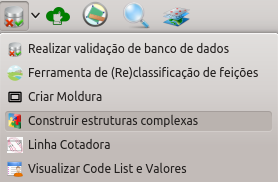
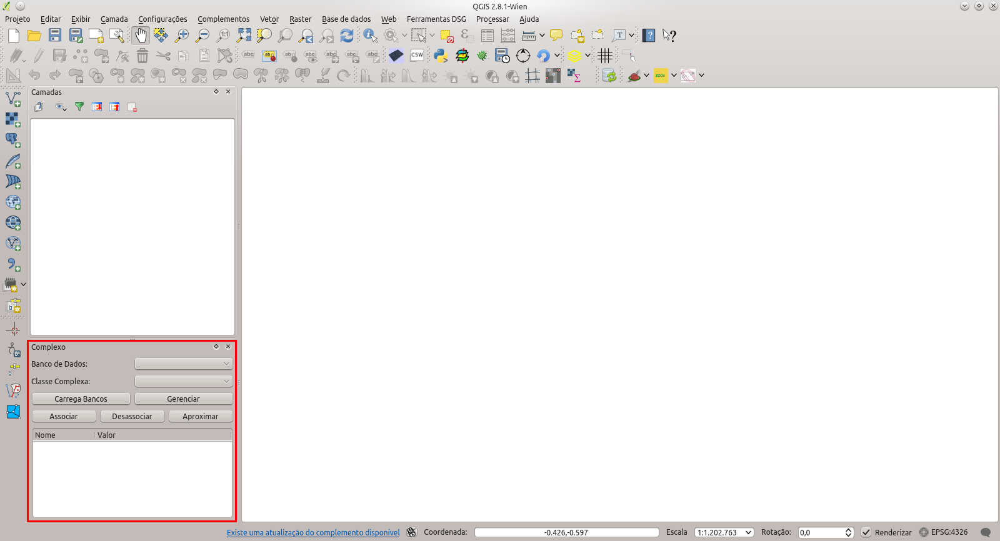
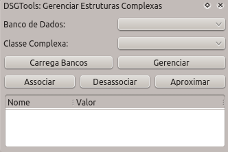
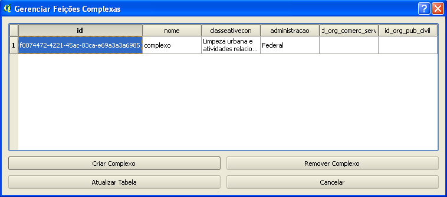

Observação: Esta ferramenta não é acessada
pela aba "DSG Tools" no QGIS. Caso
este menu não esteja aberto, marcar a caixa
Complexo no menu Exibir -> Painéis.
Aqui é possível ver um vídeo mostrando como realizar a manipulação de feições complexas. Para maiores detalhes conceituais existem, abaixo do vídeo, os conceitos relacionados.
O plugin DSG Tools permite a manipulação de feições complexas. Todo o procedimento é feito pelo uso da janela presente no canto inferior esquerdo da janela principal do QGIS. Para que esta funcionalidade seja melhor aproveitada é recomendado que seja instalado o plugin Multiple Layer Selection que permite que feições presentes em diversas camadas sejam selecionadas caso estejam sendo desenhadas no canvas do QGIS independente de seleção de camadas.

Inicialmente as camadas que serão trabalhadas devem ser carregadas no QGIS com o uso do Carrega por Classe ou do Carrega por Categoria. Os bancos de dados referentes às camadas carregadas serão listados no campo Banco de Dados ao se clicar no botão Carrega Bancos . Um dos bancos de dados listados deve ser selecionado, este banco de dados será utilizado para criar/gerenciar os complexos. Posteriormente uma classe de complexos deve ser selecionada no campo Classe Complexa .
Com o banco e a classe complexa selecionados é possível gerenciar (botão Gerenciar ) os complexos. Neste diálogo é possível criar, remover e atualizar os complexos existentes como se pode ver na figura abaixo.

Com a criação/atualização com sucesso de um complexo é possível que feições sejam associadas a ele. Primeiramente as feições que se deseja associar devem ser selecionadas. O complexo que se deseja associar deve ser selecionado na árvore de complexos presente no diálogo. Posteriormente é necessário clicar o botão Associar .

O resultado de uma associação feita com sucesso pode ser visto na figura abaixo.

De forma correlata é possível desassociar feições de um complexo clicando-se no botão Desassociar .
Como funcionalidade de inspeção é possível se utilizar o botão Aproximar para realizar o zoom na feição complexa levando em consideração o retângulo envolvente de todas as feições associadas ao complexo em questão.